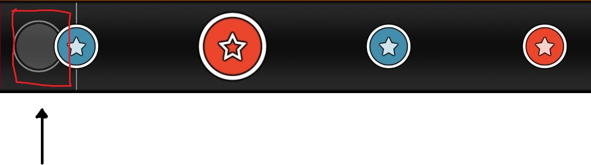

태고책
저자: Konpaku Sariel
도움: POCARI SWEAT, 4_4
디스코드 링크: https://discord.gg/STR4Pn9GYP
서론
이 글을 쓴 목적
- 접기전에 알고있는 지식을 남기기 위해
- 한국 태고 커뮤니티의 번영과 발전을 위해
정보교류를 위한 디스코드 서버를 만들었습니다. 궁금하신 점이 있다면 이 서버에서 자유롭게 질문해주세요.
K-2 님이 작성하신 공략글입니다.
https://cafe.naver.com/ofclove/443566
용어 설명
기초
빨간색 작은 원은 동이라고 부릅니다. 일본어로 ドン이라 부르고 영어로는 don(줄여서 d)이라고 합니다. 파란색 작은 원은 캇이라고 부릅니다. 일본어로 カッ이라 부르고 영어로는 kat(줄여서 k)이라고 합니다. 1, 2번과 같은 작은 원들을 노트라고도 부릅니다. 일본어로는 音符, 영어로는 Note라고 합니다.
빨간색 큰 원은 큰 동이라고 부릅니다. 파란색 큰 원은 큰 캇이라고 부릅니다. 3, 4번과 같은 커다란 원들을 큰 노트라고도 부릅니다. 일본어로는 大音符, 영어로는 Big Note 혹은 Finisher라고 합니다.

슬라이더입니다. 단무지라는 별명으로 불리기도 합니다.일본어로는 연타(連打)라고 불리고 영어로는 Slider라고 불립니다.

스피너입니다. 뎅뎅이라고 부르는 경우도 있습니다. 일본어로도 마찬가지로 스피너(スピナー), 영어로도 Spinner 입니다.


마디선입니다. 각 마디의 첫 부분에 나타나는 선 입니다. 위쪽 사진에서는 큰 동 뒤에 있습니다. 일본어로는 소절선(小節線)이라고 하고 영어로는 Bar Line 이라고 합니다.
키아이 타임입니다. 고고타임이라고 부르는 경우도 있습니다. 일본어로도 キアイタイム 혹은 ゴーゴータイム이라 하고, 영어로는 Kiai Time 이라 합니다. 스킨에 따라 다르지만, 기본 스킨 기준으로 캐릭터가 춤을 추며 플레이 필드가 밝아집니다. 해당 구간에서는 모든 점수가 1.2배가 됩니다.
고급
이 파트는 어느정도 숙련된 사람이 읽는것을 추천합니다. 이 단원을 넘기고 싶으시다면 다음 장으로 넘어가셔도 괜찮습니다.
비트

n비트(4비트, 8비트 등)은 n분음표를 뜻합니다. 즉 4비트는 4분음표만큼의 간격입니다. 위 그림에서 1에 해당하는 간격은 4비트, 2에 해당하는 간격은 8비트, 3에 해당하는 간격은 16비트 입니다.

12비트의 경우, 4비트를 3개로 나눈 박자입니다.
4분음표는 한 박자 라고도 표현하는데, (8분음표는 반 박자) 4분음표를 1/1, 8분음표를 1/2, 16분음표를 1/4 로 표현하는 경우도 있습니다. (12비트는 1/3)
연타
연타(2연타 3연타 등)는 같은 간격의 노트가 2개 이상 연달아 오는 패턴을 의미합니다. 위의 사진은 각각 3연타, 3연타, 5연타 입니다. 영어로는 2연타는 Doublet, 3연타는 Triplet, 그 이상은 N-plet 혹은 N-tuple 혹은 N Tuplet이라고 부릅니다. (주로 N-plet이 사용됨) (부정확함)
스트림
스트림입니다. 기차라고도 부릅니다. 같은 간격의 노트가 긴 시간동안 연달아 오는 패턴을 의미합니다. 영어로는 Stream이라고 합니다.
복합스트림 입니다. 복합 기차라고도 부릅니다. 스트림 패턴에 추가적으로 박자가 바뀌는 경우 복합 스트림이라고 부릅니다.
판정 오차 미터

판정 오차 미터입니다. 노트를 빠르게 처리한 경우 왼쪽에, 느리게 처리한 경우 오른쪽에 선이 표시됩니다.
오프셋

오프셋입니다. 곡의 시작지점입니다. 만약 판정 오차미터가 한 쪽으로 쏠린 경우, -키와 +키를 이용하여 오프셋을 조절할 수 있습니다. 왼쪽으로 쏠린 경우 -키, 오른쪽으로 쏠린경우 +키를 사용하여 조절할 수 있습니다. alt키와 -키를 동시에 눌러서 1ms단위로 조절할 수 있습니다.
기초
타법
처음에 태고를 시작하면 기본 키 설정이 ZXCV로 되어 있습니다. (ZV=캇, XC=동)
Ctrl + O키를 누른 후, 조이스틱 모양의 아이콘을 누른 다음, 키 설정 버튼을 클릭하면 아래 사진과 같이 키 설정을 변경할 수 있습니다.
키 설정을 DFJK로 바꾸거나 ZXNM 등으로 바꾸는 경우도 있습니다.
혹은 DFJK나 CVNM등 한 손에 색을 하나씩 부여하는 방식으로 키 설정을 바꾸는 경우도 있습니다.
왼쪽부터 동, 캇의 앞글자를 따와서 각각 kddk배치, kkdd 혹은 ddkk배치 라고 부릅니다.
키 배치마다 장단점이 존재하는데, kddk배치는 입문이 어려운 대신에 성장할 수 있는 한계점이 높고, kkdd배치는 입문이 쉬운 대신에 성장할 수 있는 한계점이 무척 낮습니다. 또한 kddk배치를 사용할 경우, 아케이드 태고를 할 때에도 도움이 됩니다.
플레이

화살표가 가리키고 있는 부분을 판정원이라고 합니다. 음악에 맞춰서 노트가 판정원에 겹치는 순간, 해당 색에 맞는 키를 누르면 노트가 처리됩니다.
동에 해당하는 키와 캇에 해당하는 키가 각각 2개씩 있는데 둘 중 하나만 눌러도 됩니다. 큰 노트의 경우, 두 키를 동시에 누르면 점수가 2배로 들어갑니다.
슬라이더는 16분음표에 해당하는 속도로 연타하는것으로 처리가 가능합니다. 아무 키를 눌러도 되지만 박자를 정확하게 쳐야합니다.
스피너는 동과 캇을 번갈아 누르는 것으로 처리가 가능합니다.
kddk키배치의 경우, 예를들어 키 설정이 DFJK인 경우에, 4손가락으로 KJ DF KJ DF를 입력하면 빠른 처리가 가능합니다.
중급
3연타
이 문단은 Muzukashii 혹은 3성대의 맵을 충분히 칠 수 있는 수준에 도달한 이후에 읽는 것을 추천드립니다.
위와 같이 연속으로 노트가 3개 오는것을 3연타라고 합니다. kkdd배치의 경우에는 처리에 큰 문제가 없지만, kddk의 경우에는 평소에 쓰지 않던 반대쪽 키를 활용해야하기 때문에 처음 이 패턴을 마주한 경우 처리가 어려울 가능성이 높습니다.
3연타의 패턴은 총 8종류가 있습니다. 자주 나오는 순서대로 나열하면 아래와 같습니다.
- ddd | kkk
- ddk | kkd
- dkd | kdk
- dkk | kdd
kddk배치의 경우, 3연타를 번갈아서 치도록 연습하는것이 중요합니다. 번갈아서 치지 않을 경우, kkdd배치와 마찬가지로 초반에는 수월하지만 난이도가 올라갈수록 체력 효율이 좋지 않기 때문에 성장 한계점이 낮습니다.
연타를 한손으로 처리하는 타법을(ddk를 왼손 오른손 오른손, dkd를 오른손 오른손 오른손) rolling이라고 합니다.
https://osu.ppy.sh/beatmapsets/1347454
이 맵팩이 3연타 연습에 도움이 될 것입니다.
https://docs.google.com/spreadsheets/d/1LWA0fFITTHOd4vorUxNhERb_4ukYqzcMdu03wpXcpSE/edit#gid=0 위 맵팩에서 어떤 패턴이 들어가있는지 정리되어있는 시트입니다.
N연타
Oni난이도는 주로 다양한 박자의 16비트 패턴으로 이루어져있습니다. 그 중 가장 기본적인 패턴이 3연타이고, 난이도가 올라갈수록 5연타, 7연타, 4연타, 2연타 등 여러 패턴이 등장하게 됩니다.
2연타는 dd, kk, dk, kd 4 종류가 있습니다. 치는데 큰 어려움은 없지만 dk와 kd를 양손을 이용해서 치는 연습을 하는것을 추천합니다.
4연타는 ooxx, oxxx, ooox 와 같이 2+2, 1+3, 3+1로 잘라서 읽은 다음 치는것이 정석입니다. 5연타 이상도 마찬가지입니다.
4연타의 경우, dddk, kkkd와 같은 패턴은 3연타를 치고 난 다음 반대손으로 마지막 노트를 치는 방식으로 처리합니다.
비슷한 방법으로 kddd, dkkk는 첫번째 노트를 치고나서 반대손으로 시작하여 나머지 3연타를 처리합니다.
dkkd의 경우에는 d + kkd 혹은 dkk + d 로 읽은다음 처리할 수 있고, kddk의 경우에는 kdd + k 혹은 k + ddk 로 읽은다음 처리할 수 있습니다.
반대손으로 처리해야하는 이유는 노트를 홀수개로 분할하여 처리했기 때문입니다.
kkdd와 ddkk같은 경우는 kk+dd로 잘라서 읽는데, 이 경우에는 짝수개로 잘랐기 때문에 kk와 dd를 같은손으로 시작하여 처리하면 됩니다.
5연타도 비슷한 원리로, 자주 쓰이는 패턴을 예시로 들면
ddkkd -> dd + kk + d 혹은 dd + kkd kkddk -> kk + dd + k 혹은 kk+ ddk
ddddk -> dd + ddk 혹은 dddd + k kkkkd -> kk + kkd 혹은 kkkk + d
dkkkd -> d + kkk + d 혹은 dkkk + d kdddk -> k + ddd + k 혹은 kddd + k
dkddk -> dk + ddk kdkkd -> kd + kkd
dkkdk -> dkk + dk kddkd -> kdd + kd
dkkkk -> d + kkkk kdddd -> k + dddd

(F=시작손, R=반대손)
6연타 이후도 비슷한 방법으로 잘라서 읽은 뒤 그대로 처리하시면 됩니다.
잘라서 읽는것은 앞으로도 정말 중요한 기술이니 연습을 많이 하면 좋습니다.
스트림
이 문단은 Oni난이도를 수월하게 처리할 수 있는 실력을 쌓고 읽는것을 추천합니다.
스트림 패턴은 동일한 박자의 노트가 길게 연달아서 나오는 패턴입니다.
스트림을 처리하는 방법은 위에 설명했던 방식대로 잘라서 읽고 처리하는 것입니다.
스트림의 종류로는 노트를 짝수개씩 잘라서 읽을수 있는 짝수 스트림, 홀수개씩 잘라서 읽을 수 있는 홀수 스트림, 3연타가 이어서 나오는 3연타 스트림, 모든 패턴이 복합적으로 나오는 복합 스트림이 있습니다.
짝수 스트림
짝수 스트림의 특징으로는, 색이 바뀔 때 시작하는 손이 바뀌지 않는 점입니다.
짝수 스트림이 나오는 대표적인 패턴은 Yawaraka Sensha가 있습니다.
https://osu.ppy.sh/beatmapsets/888125#taiko/1856464

전부 짝수개의 연타로 이루어져있으므로 색이 바뀌는 모든 시작점은 시작손으로 치면 됩니다.

중간에 1 + 3 기차가 있어서 홀수 스트림이라고 생각될 수 있지만, 패턴의 주기가 4이므로 짝수 스트림입니다.
각 손마다 어떻게 쳐야할지 분석해보면, 오른손으로는 d d k d k d k d 를 치면 되고, 왼손으로는 동만 치면 됩니다.
홀수 스트림
홀수 스트림의 특징으로는, 색이 바뀔 때 동을 오른손으로 시작했다면 캇은 반드시 왼손으로 시작한다는 점입니다.
홀수 스트림이 나오는 대표적인 패턴은 Kurenai가 있습니다.
https://cdn.discordapp.com/attachments/810468542436212797/810799276862341130/X_JAPAN_-_Kurenai.osz
이 패턴은 ddd를 치고나서 바로 다음으로 반대손으로 kkk 그리고 원래손으로 ddd를 치는것을 반복하면 됩니다.

이 패턴은 위의 패턴을 두번 반복한 다음 맨 마지막에 ddk를 치면 됩니다.
3연타 스트림
3연타 스트림은 반대손으로 3연타를 치는것을 연습하지 않으면 처리하기가 까다롭습니다.
3연타 스트림이 나오는 대표적인 패턴은 아래와 같습니다.
https://osu.ppy.sh/beatmapsets/22699#taiko/78390
https://osu.ppy.sh/beatmapsets/28609#taiko/114207
https://osu.ppy.sh/beatmapsets/40233#taiko/128791
https://osu.ppy.sh/beatmapsets/697523#taiko/1477485
ddk가 계속해서 반복되는 스트림입니다. 3개씩 잘랐으므로, 시작손으로 ddk를 처리후, 바로 이어서 반대손으로 ddk를 처리하고 이것을 반복하면 됩니다.

캇에 초점을 맞춰서 이렇게 읽는 방법도 있습니다. 노트 두개를 먼저 치고 나서 시작손으로 kdd를 처리후, 바로 이어서 반대손으로 kdd를 처리하고 반복한 다음, kd를 칩니다.
복합 스트림
복합 스트림은 정해진 패턴이 없어서 치기 무척 까다롭습니다. 잘라서 읽는 것에 숙달되거나, 외워서 하는 방법 말고는 없습니다.
홀수개로 잘랐을 경우 다음 노트는 반대손으로, 짝수개로 잘랐을 경우 다음 노트는 같은 손으로 시작합니다.
같은 색으로 길게 섞여서 나올 경우 홀수 짝수 구분이 어려운 경우가 있습니다. 그럴 때에는 정박자로 시작하는지 엇박자로 시작하는지, 그리고 정박자로 끝나는지 엇박자로 끝나는지를 알고있으면 패턴을 파악하는데 도움이 됩니다.
정박자에서 시작해서 정박자로 끝나거나 엇박자로 시작해서 엇박자로 끝나는 경우는 모두 홀수입니다.
정박자에서 시작해서 엇박자로 끝나거나 엇박자로 시작해서 정박자로 끝나는 경우는 모두 짝수입니다.


웬만해선 이런 패턴은 잘 사용되지 않지만, 만약 이러한 패턴이 보일 경우 마디선을 잘 보아야 합니다.
개수를 일일이 세지 않아도 해당 노트가 정박자에 있는지, 엇박자에 있는지 알고있으면 그 노트를 어느손으로 쳐야하는지 바로 계산할 수 있습니다. (해당 패턴은 핵폐기물이라는 별명으로 유명한 맵에서 가져온 것. https://osu.ppy.sh/beatmapsets/20125#taiko/93266)
https://osu.ppy.sh/beatmapsets/1014955
N연타 연습에 도움이 되는 맵팩입니다,
https://docs.google.com/spreadsheets/d/1LWA0fFITTHOd4vorUxNhERb_4ukYqzcMdu03wpXcpSE/edit#gid=278022392
스트림 연습에 도움이 되는 맵 리스트입니다.